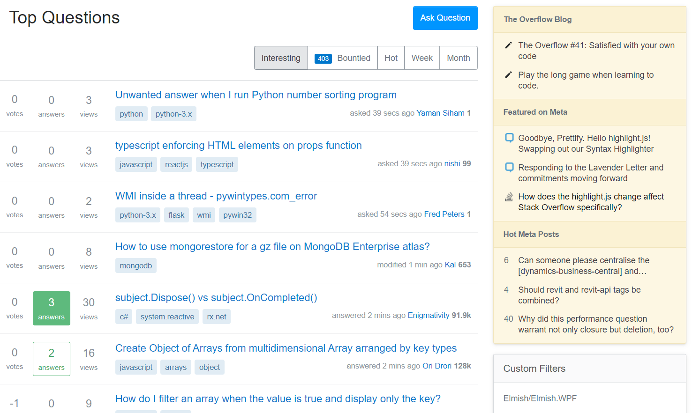

Focused Web Browsing
Use uBlock Origin to remove distractions while browsing the web.
Watching The Social Dilemma reminded me about the subtle ways in which websites try to influence my behavior. Many small pieces of advice were given near the end, including this one.
Never accept the video recommended to you on YouTube. Always choose. That is another way to fight.
This advice got me thinking about other websites where I accept the given recommendation instead staying focused. I never lose focus to ads because I block them with AdBlock Plus. I do lose my focus in other ways though.
As a programmer, I often visit StackOverflow. Sometimes I get distracted by the recommended content in the yellow box in the top-right corner of the website. I come to StackOverflow for answers to my technical questions, which are never in an Overflow blog post or in Meta.

I never come to StackOverflow with the intention of clicking on any of those links. Nevertheless, I sometimes do. Since I can't completely control my impusles, I would prefer if I were never tempted by that content in the yellow box in the first place.
Thankfully, a friend showed me how I can do this using uBlock Origin, which I now use (instead of AdBlock Plus) via this Google Chrome extension. It allows me to block any part of a website in just takes three easy steps.
- Right-click the distracting content
- Select Block element...
- Click Create
The following GIF shows me performming those steps to block the yellow box on StackOverflow.

Since then I have also blocked similar sections of recommended content that distract me on Twitter and LinkedIn. This is just the beginning. I expect to block many more things. I am glad that I now have such a powerful tool in the battle for my attention.
linkSummary
Use uBlock Origin to stay focused while browsing the web by using its element blocking feature to remove distracting content.
linkTags
The tags feature of Coding Blog Plugin is still being developed. Eventually the tags will link somewhere.